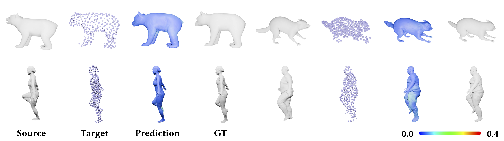

Method

(a) Given a source point cloud and input target point cloud sequence, ERNet first encodes them independently using a shared local feature encoder and splat per-point features onto Tri-plane grids.
(b) Deformation graph nodes are initialized based on the source point cloud and coarse-to-fine matching is performed to predict node positions and radii using encoded features.
(c) With the predicted node trajectories and radii, node transformations are computed via Procrustes Analysis and dense registration is produced using RBF-based LBS.
Registration Results

Qualitative comparison results on two challenging examples from partial D-FAUST and DT4D-A datasets. The point color reflects the L2 distance from ground truth, where blue indicates less error and red indicates more.
Registration Results

Additional qualitative results from D-FAUST and DT4D-A datasets. The error heatmap ranges from 0 to 0.4, with 0 indicating perfect registration and 0.4 indicating the worst.